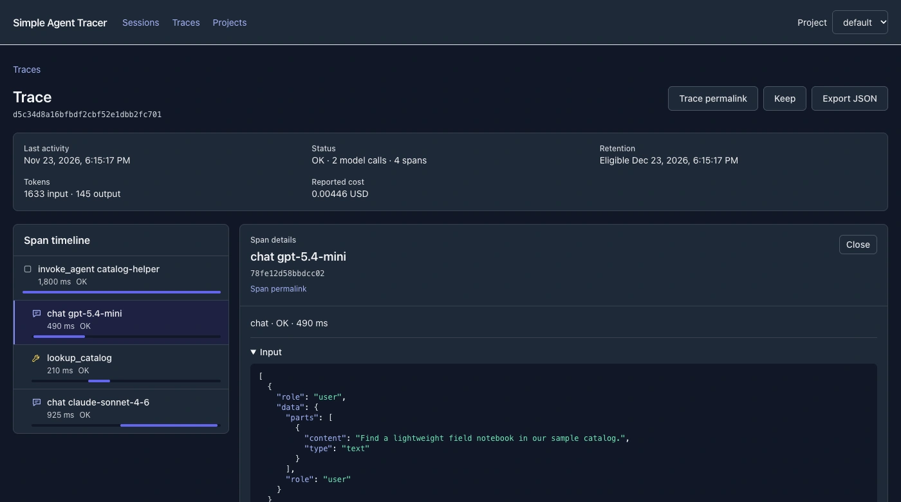

Debug on your laptop
Send OpenTelemetry traces from an agent you’re developing. Open a slow turn to see which model call or tool consumed the time.
Lightweight, self-hosted agent tracing
See what your agents did, from the conversation to individual model calls, tool results, timings, and reported cost. Run it on your laptop or homelab server.
The browser UI ships inside one Go binary. SQLite is the default, and every feature is available without a paid tier.
Read the footprint benchmarkSend OpenTelemetry traces from an agent you’re developing. Open a slow turn to see which model call or tool consumed the time.
Point your self-hosted agents at a single tracer. Give each exporter a project-scoped key and set a retention policy for each project.
Use the session view to read the exchange. Open a trace to compare span timing and inspect a single call.

Filter sessions and traces by model, tool, status, and metadata. Share a link to a specific trace or span.
Read captured messages, tool inputs and outputs, and span attributes alongside durations, tokens, and reported cost.
Give exporters project-scoped keys, choose whether to capture content, and keep selected traces beyond their retention window.
Quickstart
Build with Go 1.26 and Node.js 22 or later. Open 127.0.0.1:4318 after starting the tracer.
Set your OTLP exporter to HTTP/protobuf and send traces to http://127.0.0.1:4318/v1/traces.
git clone https://github.com/pridkett/simple-agent-tracer.git
cd simple-agent-tracer
npm --prefix frontend ci
npm --prefix frontend run build
CGO_ENABLED=0 go build -tags frontend -o tracer ./cmd/tracer
./tracerConnect Simple LLM Proxy over OTLP to bring model requests and usage into the same explorer as your agent’s tool calls.